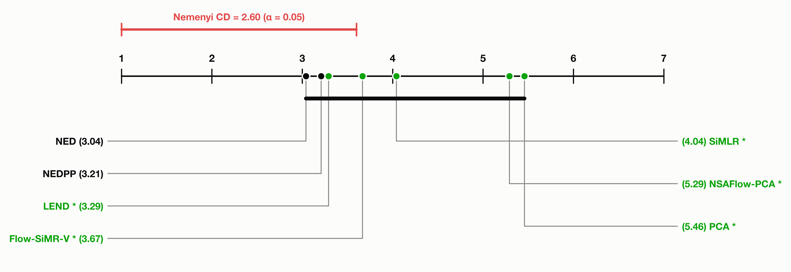
*) indicate models on the 5-objective non-dominated Pareto frontier.
We evaluate the seven benchmarked architectures defined in Chapter 2 across twelve multi-view benchmarks: six real biomedical and clinical cohorts (ADNI-MCI, MultiOmics [TCGA-BRCA], TCGA-KIRC, Heart, Diabetes, and mfeat) and six synthetic generative regimes with known ground-truth latent coordinates \(\mathbf{U}^*\) and feature supports \(\mathbf{V}_m^*\) (Table 3.1). Every model is evaluated across three independent 70/30 stratified or random train/test splits (seeds \(42, 43, 44\)) across three nsa_flow quantile sparsity levels (\(q \in \{\text{None}, 0.5, 0.8\}\), 756 train/test fits), plus 189 paired reruns with non-negative loadings on the three high-dimensional cohorts and a 1,025-configuration hyperparameter sweep on ADNI-MCI (\(N = 1,084\), one seed). To prevent data leakage, all feature standardization (StandardScaler), column completeness filtering (\(\ge 98\%\)), and demographic covariate adjustments (Frisch–Waugh–Lovell residualization (Frisch and Waugh 1933; Lovell 1963) of age, biological sex, and education inside ADNI-MCI) are fitted strictly within each training split and applied out-of-sample to the held-out test split.
deep_ranking_benchmark.csv.
| Cohort | Domain / Modality Structure | N | Views [p_m] | Clinical / Task Target | Best Linear XV vs PCA |
|---|---|---|---|---|---|
| ADNI-MCI | Clinical MRI + Cog | 1,084 | 4 [160, 160, 62, 11] | CogPC1 R2 (MRI Only) | NED (0.209 vs PCA 0.152) |
| MultiOmics (BRCA) | Oncology (mRNA/CNV/RPPA) | 822 | 3 [200, 150, 150] | ER Status Accuracy | Flow-SiMR-V (0.927 vs PCA 0.915) |
| TCGA-KIRC | Oncology (mRNA/CNV/RPPA) | 467 | 3 [200, 150, 150] | Pathologic Stage Acc | NEDPP (0.693 vs PCA 0.686) |
| Diabetes | Clinical Chemistries | 442 | 2 [5, 5] | 1-Yr Progression R2 | NSAFlow-PCA (0.381 vs PCA 0.351) |
| Heart | Cardiology Vitals + ECG | 297 | 2 [7, 6] | Coronary Disease Acc | NSAFlow-PCA (0.848 vs PCA 0.841) |
| mfeat | Multi-Descriptor Digits | 2,000 | 4 [76, 64, 6, 47] | 10-Class Accuracy | NEDPP (0.972 vs PCA 0.727) |
| Linear | Synthetic (50% Sparse ±) | 1,000 | 3 [100, 80, 60] | Latent R2 & Support F1 | NEDPP (0.975 vs PCA 0.968) |
| Polynomial | Synthetic (Deg-3 Warped) | 1,000 | 3 [120, 80, 50] | Latent R2 & CMC | LEND (0.885 vs PCA 0.864) |
| Sine | Synthetic (Harmonic Warp) | 1,000 | 3 [120, 80, 50] | Latent R2 & CMC | NEDPP (0.947 vs PCA 0.921) |
| Shared+Private | Synthetic (80% Sparse ±) | 1,000 | 3 [160, 60, 30] | Latent R2 & Support F1 | SiMLR (0.948 vs PCA 0.291) |
| NonnegParts | Synthetic (66.7% Non-Neg) | 400 | 3 [120, 45, 30] | Dominant Factor R2 & F1 | SiMLR (0.933 vs PCA 0.893) |
| NonnegWeak | Synthetic (80% Non-Neg) | 400 | 3 [120, 45, 30] | Weak Factor u3 R2 & F1 | SiMLR (0.758 vs PCA 0.125) |
In ADNI-MCI (\(N = 1,084\)) (Mueller et al. 2005; Jack et al. 2008; Weiner et al. 2017), Views 0–2 capture \(382\) regional structural MRI features from the ANTsPyT1w/ANTsPyMM pipelines: the volumes of 160 hierarchical segmentation labels (View 0: cortical, subcortical, ventricular, white-matter and cerebellar labels), the volume-to-surface-area ratio of the same 160 labels (View 1; for a cortical label it tracks thickness, otherwise it is a shape index), and DiReCT cortical thickness averaged in each of 62 Desikan–Killiany–Tourville (DKT) cortical regions (View 2) (Avants et al. 2008, 2011; Tustison et al. 2014; Desikan et al. 2006; Klein and Tourville 2012; Stone et al. 2020, 2024; Marek et al. 2011; Smith et al. 2013), while View 3 comprises eleven neuropsychological scales (ADAS11, ADAS13, ADASQ4 (Rosen et al. 1984), MMSE (Folstein et al. 1975), CDRSB (Morris 1993), TRABSCOR (Reitan 1958), FAQ (Pfeffer et al. 1982), and four Rey Auditory Verbal Learning Test sub-scores RAVLT_immediate, RAVLT_learning, RAVLT_forgetting, RAVLT_perc_forgetting (Rey 1964)). Following Protocol B, the three MRI views align with the cognitive battery during training, but test-set predictions are generated exclusively from structural MRI. In MultiOmics (TCGA-BRCA, \(N = 822\)) (The Cancer Genome Atlas Network 2012) and TCGA-KIRC (\(N = 467\)) (The Cancer Genome Atlas Research Network 2013), mRNA expression (\(p_1 = 200\)), somatic copy-number variation (\(p_2 = 150\)), and RPPA proteomics (\(p_3 = 150\)) predict clinical Estrogen Receptor status and pathologic tumor stage, respectively.
Across the \(B = 12\) dataset blocks and seven architectures, block-averaged non-parametric Friedman (Friedman 1937) and Iman–Davenport (Iman and Davenport 1980) omnibus tests differentiate the seven models on both the linear subspace probe (\(\chi_F^2 =\) 15.31, \(p =\) \(1.80 \times 10^{-2}\); \(F_F =\) 2.97, \(p =\) \(1.25 \times 10^{-2}\)) and the multi-modal consensus probe (\(\chi_F^2 =\) 13.77, \(p =\) \(3.23 \times 10^{-2}\); \(F_F =\) 2.60, \(p =\) \(2.53 \times 10^{-2}\); Nemenyi Critical Difference \(CD =\) 2.600 at \(\alpha = 0.05\) (Demšar 2006; Nemenyi 1963; Benavoli et al. 2016)). Table 3.2 summarizes the global metrics across all seven models, accompanied by the Demšar Critical Difference diagram (Figure 3.1), the multi-objective speed–accuracy and support–consensus Pareto frontiers (Figure 3.2), and the three-probe performance profile (Figure 3.4).
| Architecture | Friedman Rank ↓ | Linear XV ↑ | RF Axis XV (Drop) ↑ | Consensus U ↑ | Latent CMC ↑ | Support F1 ↑ | Sparsity % ↑ |
|---|---|---|---|---|---|---|---|
| NED | 3.04 | 0.734 | 0.719 (-0.014) | 0.662 | 0.762 | 0.539 | 42.5% |
| NEDPP | 3.21 | 0.736 | 0.715 (-0.021) | 0.639 | 0.701 | 0.52 | 42.3% |
| LEND | 3.29 | 0.752 | 0.732 (-0.020) | 0.726 | 0.839 | 0.605 | 44.1% |
| Flow-SiMR-V | 3.67 | 0.768 | 0.745 (-0.023) | 0.739 | 0.873 | 0.656 | 43.8% |
| SiMLR | 4.04 | 0.749 | 0.733 (-0.016) | 0.74 | 0.897 | 0.52 | 47.5% |
| NSAFlow-PCA | 5.29 | 0.644 | 0.600 (-0.044) | 0.648 | 0.717 | 0.55 | 46.8% |
| PCA | 5.46 | 0.644 | 0.601 (-0.044) | 0.648 | 0.71 | 0.308 | 0.0% |

*) indicate models on the 5-objective non-dominated Pareto frontier.
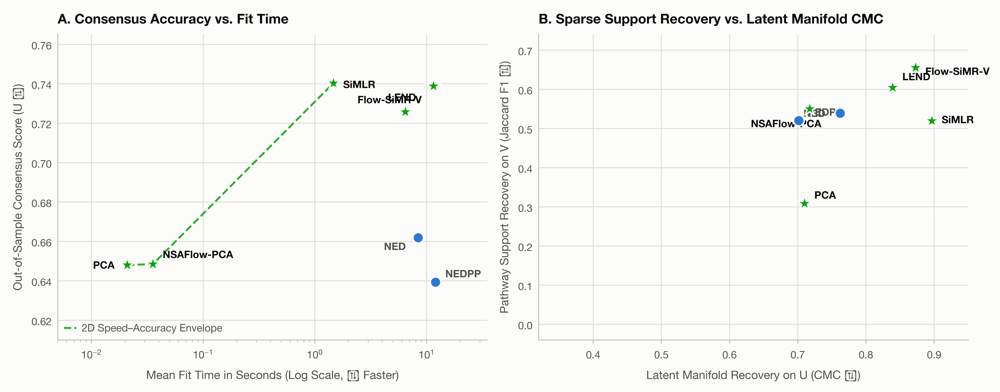
Fit_Seconds, log scale), with the 2D speed–accuracy Pareto frontier as a green dashed envelope. (B) Ground-truth feature support recovery on \(\mathbf{V}_m\) (Jaccard F1) versus latent manifold recovery on \(\mathbf{U}\) (CMC) across the six synthetic ground-truth regimes. Green stars denote architectures that are non-dominated across the full 5-objective vector.
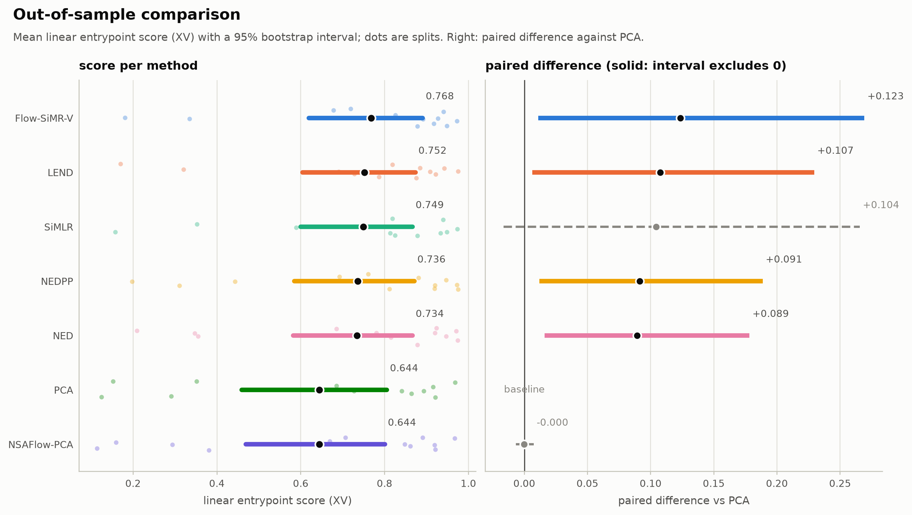
pysimlr.plot_benchmark_uncertainty, seeds averaged per dataset block, 2,000 bootstrap resamples). Left: mean linear entrypoint score (\(\mathbf{X}\mathbf{V}\)) with 95% bootstrap interval and per-cohort dots. Right: paired difference (method − PCA) across the 12 cohorts; solid colored intervals exclude zero.
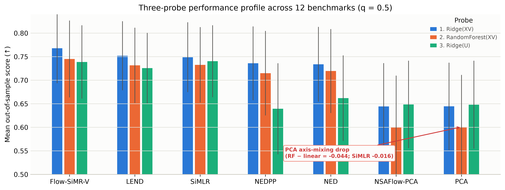
pysimlr.plot_benchmark, mean \(\pm\) SE over cohort blocks) across the three complementary evaluation probes at the discovery operating point (\(q = 0.5\)): Subspace Fidelity (Ridge(XV), blue), Single-Axis Interpretability (RandomForest(XV), orange), and Shared Patient Consensus (Ridge(U), green).
Three empirical principles emerge from Table 3.2 and Figures 3.1–3.4:
NED (3.04), NEDPP (3.21), LEND (3.29), Flow-SiMR-V (3.67), against PCA (5.46) and NSAFlow-PCA (5.29) (Figure 3.3). On heterogeneous cohorts such as mfeat (\(p = [76, 64, 6, 47]\)) and Shared+Private (\(p = [160, 60, 30]\)), concatenated PCA reaches a linear score of 0.727 (mfeat accuracy) and 0.291 (Shared+Private \(R^2\)), against 0.972 (NEDPP) and 0.948 (SiMLR) for the best multi-view model. Over the 12 datasets (seeds averaged, Wilcoxon signed-rank against PCA with Holm adjustment, Appendix B), the linear score differs from PCA at \(p < 0.05\) for 0 of 6 models (none).PCA mixes distinct mechanisms across columns. With coordinate-splitting decision trees (RandomForest), PCA loses -0.044 on average across the 12 cohorts (Random Forest minus linear score), falling from 0.125 to -0.000 on the weak sparse factors of NonnegPartsWeak and from 0.152 to 0.044 on ADNI-MCI (71% lower). The smallest drops are NED (-0.014), SiMLR (-0.016).Linear regime ranges from \(F_1 =\) 0.500 (PCA) to 1.000 (NSAFlow-PCA), and reaches 0.875 on NonnegParts (Flow-SiMR-V). On the focal \(20\%\)-active modules, the best \(F_1\) at \(q = 0.8\) is 0.833 on NonnegPartsWeak (Flow-SiMR-V) and 0.806 on Shared+Private (Flow-SiMR-V).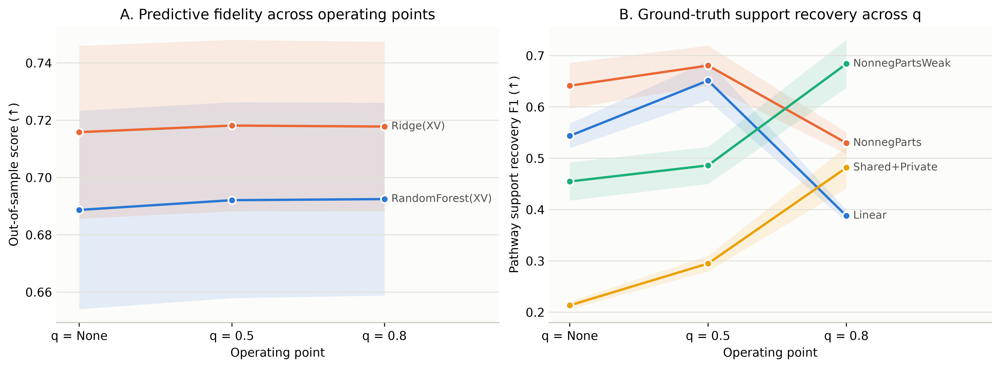
pysimlr.plot_benchmark, mean \(\pm\) SE with direct line-end labels, no secondary axes) across the default-positivity fits at unthresholded (q = None), moderate (q = 0.5), and focal (q = 0.8) quantile sparsity. (A) Out-of-sample linear subspace (Ridge(XV)) and single-axis (RandomForest(XV)) scores across the 12 cohort blocks. (B) Ground-truth feature support recovery (\(F_1\)) on the sparse synthetic regimes across \(q\).
ADNI-MCI (\(N = 1,084\)): Predicting Cognition from MRI Alone and Attributing the PredictionA primary clinical test of multi-modal representation learning is whether aligning structural neuroimaging with multi-domain cognitive batteries during training yields an anatomical basis that better predicts cognitive severity in new patients who have only undergone an MRI scan (Protocol B). Across \(N = 1,084\) participants with Mild Cognitive Impairment, Table 3.3 compares all seven benchmark models on held-out MRI-only prediction of composite cognitive impairment (CogPC1 \(R^2\), after in-fold adjustment for age, sex, and education), single-axis Random Forest prediction, and mean ridge regression \(R^2\) across all eleven individual neuropsychological scales (ADAS11, ADAS13, ADASQ4, MMSE, CDRSB, TRABSCOR, FAQ, and four RAVLT memory scales).
ADNI-MCI (\(N = 1,084\), Protocol B: training alignment between 3 MRI views and 11 cognitive scales; cognitive views withheld at test time). 3-seed means \(\pm\) SD across seeds from the benchmark (\(q = 0.5\), default positivity) alongside the best configuration per model in the single-seed hyperparameter sweep.
| Architecture | 3-Seed MRI Linear R2 ↑ | MRI RF Axis R2 ↑ | MRI Consensus R2 ↑ | Sweep Peak CogPC1 R2 ↑ | 11-Scale Mean R2 ↑ | MRI Sparsity % ↑ |
|---|---|---|---|---|---|---|
| NED | 0.209 ± 0.023 | 0.149 | 0.131 | 0.236 | 0.109 | 48.6% |
| NEDPP | 0.197 ± 0.016 | 0.134 | 0.125 | 0.229 | 0.107 | 48.6% |
| Flow-SiMR-V | 0.180 ± 0.035 | 0.141 | 0.144 | 0.241 | 0.113 | 48.6% |
| LEND | 0.170 ± 0.023 | 0.122 | 0.164 | 0.255 | 0.121 | 48.6% |
| NSAFlow-PCA | 0.159 ± 0.004 | 0.021 | 0.158 | 0.188 | 0.08 | 50.7% |
| SiMLR | 0.158 ± 0.046 | 0.154 | 0.143 | 0.245 | 0.109 | 48.6% |
| PCA | 0.152 ± 0.004 | 0.044 | 0.151 | 0.178 | 0.081 | 0.0% |
Comparing the unsupervised anatomical baselines against cognitive-aligned SiMR models in Table 3.3 and Figures 3.6–3.11 yields four findings:
PCA on the \(382\) structural MRI features explains \(R^2 =\) 0.152 \(\pm\) 0.004 of out-of-sample cognitive variance (CogPC1) on the linear probe and 0.044 on the single-axis Random Forest probe. Aligning the MRI projections with the 11-scale cognitive battery during training gives, for the four leading models (3-seed means \(\pm\) SD), NED (0.209 \(\pm\) 0.023), NEDPP (0.197 \(\pm\) 0.016), Flow-SiMR-V (0.180 \(\pm\) 0.035), LEND (0.170 \(\pm\) 0.023); the best is +37.3% over PCA. The best single-axis Random Forest score is 0.154 (SiMLR), 3.5 times that of PCA. In the single-seed sweep the best configuration reaches 0.2552 (LEND) and the best linear-family configuration 0.2453 (SiMLR), against 0.1779 for PCA; mean prediction across all eleven scales reaches 0.121 (LEND) against 0.081 for PCA (+48.8%). These sweep peaks are maxima over many configurations on one split and are optimistic.CogPC1 prediction of the non-negative \(q = 0.85\) fit (all nine MRI columns, \(R^2 =\) 0.204). Component 2 carries it in every MRI view: alone it gives \(R^2 =\) 0.111 (volume), 0.211 (vol/area) and 0.148 (DiReCT thickness), against at most 0.031 for any other column, and only the vol/area column is not redundant with the rest (unique \(R^2\) +0.054). Across 20 half-sample refits, the vol/area component-2 basis selects these features in at least half of them (fraction of refits): L entorhinal (DKT cortex label): 0.75; L entorhinal (DKT parcellation): 0.75; L inferior parietal (DKT cortex label): 0.75; R entorhinal (DKT cortex label): 0.75; L temporal lobe: 0.75; L caudal middle frontal (DKT cortex label): 0.65. These are mostly entorhinal, temporal-lobe and inferior parietal measures, the regions where atrophy is expected in prodromal Alzheimer’s disease (Dickerson et al. 2009; Jack et al. 2018). DiReCT thickness tells the same story less clearly. Its first principal component explains 58% of the variance across the 62 regions (mean inter-region correlation 0.55), and consensus component 2 correlates 0.87 with subject-mean thickness, so hard-assigning each region to its largest structure coefficient places 2 / 60 / 0 regions on components 1 / 2 / 3: a display of the global factor, not of localisation (Panel B). The thickness basis itself is unstable under the default collapse penalty: it keeps two or fewer regions in 9 of 20 refits (median held-out \(R^2\) 0.106). Non-negative region sums on positively correlated features typically correlate above the penalty’s threshold of 0.3, so the penalty pushes those columns towards one or two regions. With collapse_weight = 0 the predictive thickness basis keeps a median of 9 regions (two or fewer in 1 refit), its median \(R^2\) rises to 0.154, and its most frequent regions are (fraction of refits) L entorhinal: 0.60; L supramarginal: 0.55; L superior frontal: 0.45; L inferior parietal: 0.40; R entorhinal: 0.40 (Panel D). No single thickness region replicates in more than 0.60 of refits, so the thickness map is a pattern, not a list of identified regions (docs/audit/evidence/adni_global_factor_check.csv). For reference, unthresholded non-negative fits are 67% sparse on the DKT view without rotation and 67% with Varimax, against 0% for dense PCA.ADNI-MCI (adni_mci_axis_alignment_controls.csv, axis_alignment_control_metrics): (i) a PCA-Rotated Score Control rotates the learned scores \(\mathbf{Z} = [\mathbf{X}_m \mathbf{V}_m]\) by their in-fold principal-component eigenvectors, which leaves the linear probe unchanged (largest difference \(2.83 \times 10^{-7}\)) and lowers the single-axis Random Forest score for 2 of 5 models; (ii) a Support-Shuffled Basis Control permutes the rows of each \(\mathbf{V}_m\) within its view, preserving sparsity, weight magnitudes and \(\mathbf{V}_m^\top \mathbf{V}_m\), and lowers the Random Forest CogPC1 \(R^2\) for 5 of 5 models: Flow-SiMR-V (0.140 \(\to\) 0.090), LEND (0.119 \(\to\) 0.115), NEDPP (0.145 \(\to\) 0.091), NSAFlow-PCA (0.060 \(\to\) -0.057), SiMLR (0.112 \(\to\) 0.056). Unshuffled Random Forest scores are 1.4–3.3 times that of PCA.select_rank across 20 half-sample refits (adni_rank_selection.csv) reveals that component identifiability depends critically on rank \(k\) and non-negativity. At \(k = 3\) under non-negativity, component stabilities are 0.975 (\(0.975\)), 0.803 (\(0.803\)), and 0.996 (\(0.996\)). Component 2 is unstable (\(0.803 < 0.90\)) and therefore classified as not identified (all_stable=False). In contrast, at \(k = 2\) under positivity, both components achieve full stability and identifiability (all_stable=True, stabilities 0.961 [\(0.961\)] and 0.997 [\(0.997\)]). Under signed estimation (positivity="either"), stabilities at \(k = 3\) drop to 0.993 (\(0.993\)), 0.568 (\(0.568\)), and 0.792 (\(0.792\)), failing identification on components 2 and 3.
loading_inference) strictly excludes zero; (ii) named biomarker panels report features selected via Meinshausen–Bühlmann stability selection at threshold \(\pi_{\text{thr}} = 0.80\) with expected false selections \(E[\text{false}] \le 1.0\); and (iii) non-negative displays present hard-assignment OLEE loadings accompanied by the loading_margin certainty metric.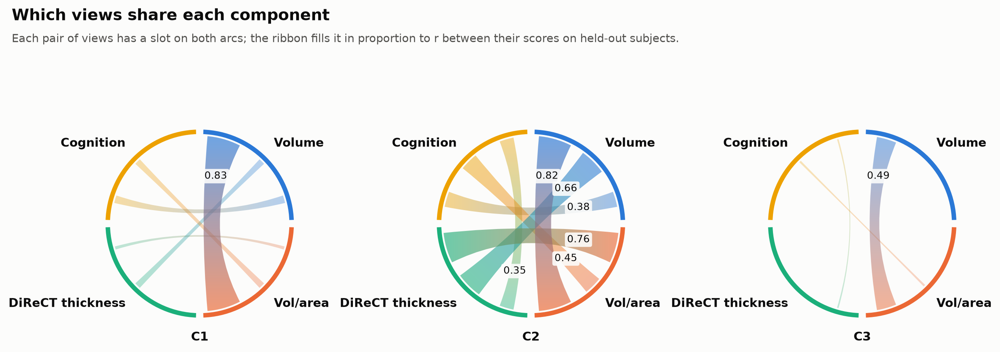
ADNI-MCI (pysimlr.plot_view_chord, \(N_{\text{test}} = 326\), Protocol B, SiMLR, \(k = 3\), \(q = 0.85\)). Each view (Volume, Vol/area = volume-to-surface-area ratio, DiReCT thickness, Cognition) occupies a fixed arc with one slot per partner view; ribbons fill their slots in proportion to held-out Pearson \(r\) between view scores, so selective coupling appears as empty arc rather than stretched ribbons.
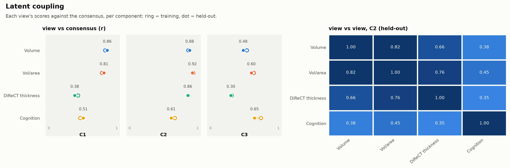
pysimlr.plot_latent_coupling) on ADNI-MCI (Protocol B).
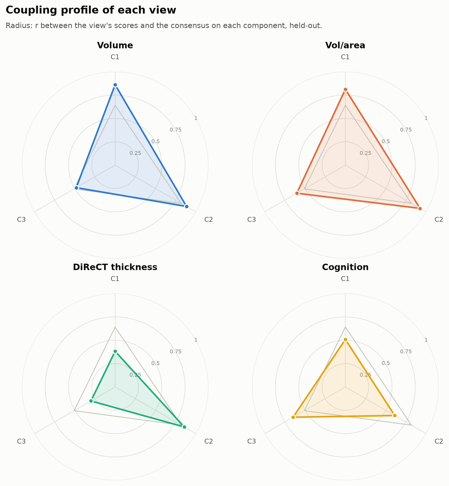
ADNI-MCI view (pysimlr.plot_component_radar); the grey polygon marks the mean over views.
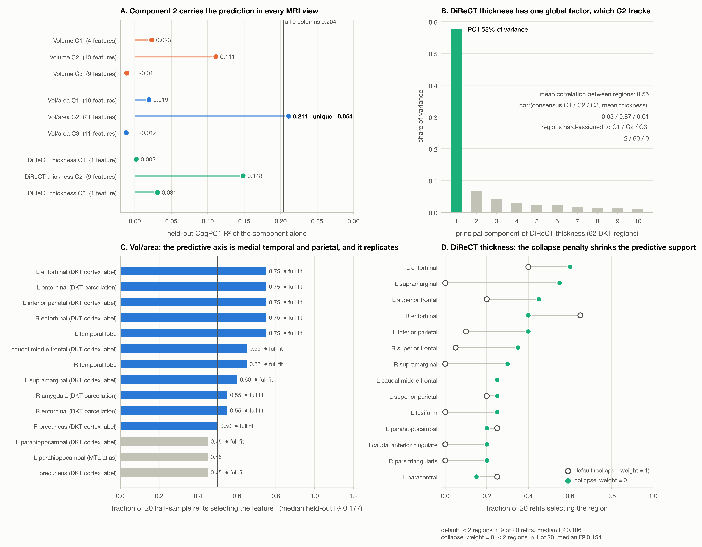
ADNI-MCI (Protocol B, SiMLR, \(k = 3\), non-negative, \(q = 0.85\), \(w = 0.50\); \(N_{\text{train}} = 758\), \(N_{\text{test}} = 326\); paper_adni_attribution.py). (A) Held-out CogPC1 \(R^2\) of each MRI component alone; unique is the loss in \(R^2\) when that column is dropped from all nine. (B) Variance spectrum of DiReCT thickness over the 62 DKT regions: one global factor, which consensus component 2 tracks; hard-assigning each region to its largest structure coefficient therefore puts almost every region on component 2. (C) Vol/area: fraction of 20 half-sample refits whose component-2 basis selects each feature (coloured: \(\ge 0.5\); dot: selected in the full fit). (D) DiReCT thickness: the same frequency under the default collapse penalty (hollow) and with collapse_weight = 0 (filled).
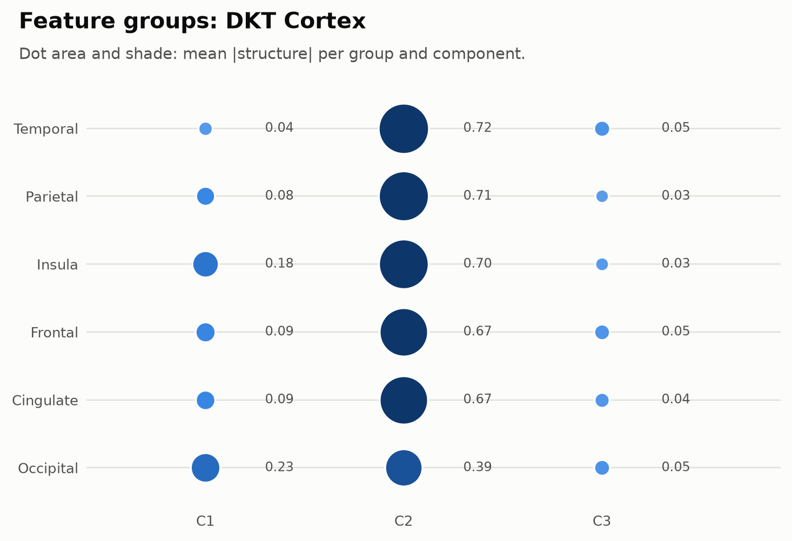
pysimlr.plot_feature_groups, mean \(|\text{structure}|\)) across the 62 DKT cortical parcels grouped into Temporal, Parietal, Frontal, Cingulate, Occipital, and Insula lobes on ADNI-MCI (Protocol B).
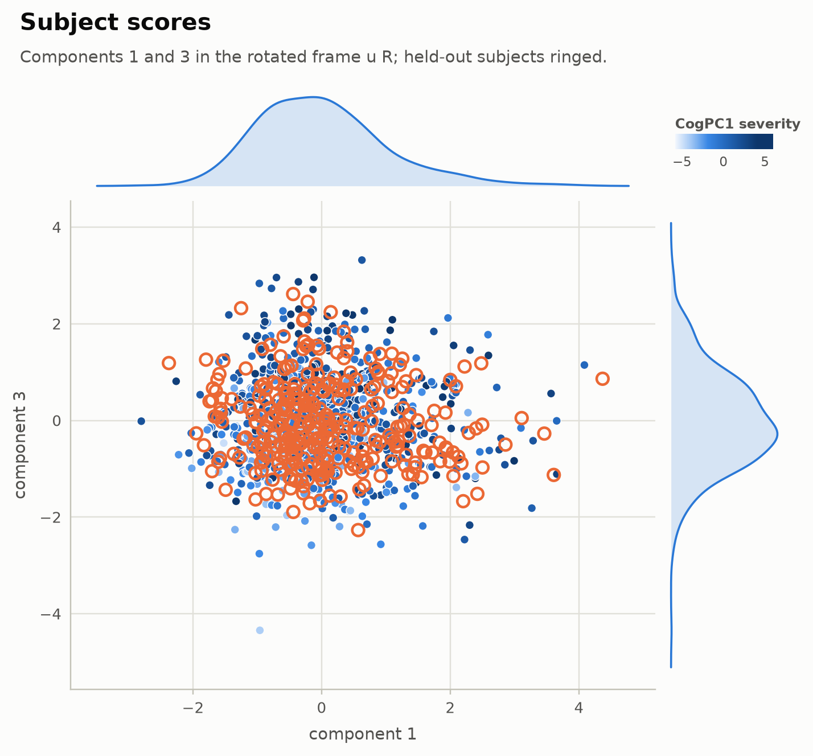
pysimlr.plot_scores, identified Components 1 and 3) shaded by CogPC1 impairment severity, with marginal KDE densities and ringed held-out MCI participants (\(N_{\text{test}} = 326\)).
TCGA-BRCA, TCGA-KIRC) and Patient-Level Clinical AttributionTo verify that the same architectural principles generalize beyond neuroimaging to molecular oncology and clinical tabular medicine, Table 3.4 compares all seven models across the six real cohorts, Figure 3.12 reports cross-cohort linear entrypoint scores (pysimlr.plot_benchmark), Figure 3.13 and Figure 3.14 map reproducible feature-to-component structure (pysimlr.plot_top_features and pysimlr.plot_feature_chord), and Figure 3.15 displays the hard-assigned OLEE loadings \(\mathbf{L}_m\) across Heart and Diabetes modalities.
XV, top) and multi-modal consensus performance (U, bottom) across all six real biomedical cohorts (3-seed mean from deep_ranking_benchmark.csv, higher is better ↑).
| Architecture | ADNI-MCI R2 ↑ | TCGA-BRCA Acc ↑ | TCGA-KIRC Acc ↑ | Diabetes R2 ↑ | Heart Acc ↑ | mfeat Acc ↑ |
|---|---|---|---|---|---|---|
| LEND | 0.170 (0.164) | 0.909 (0.919) | 0.690 (0.610) | 0.320 (0.302) | 0.819 (0.756) | 0.876 (0.818) |
| Flow-SiMR-V | 0.180 (0.144) | 0.927 (0.903) | 0.678 (0.676) | 0.335 (0.292) | 0.826 (0.793) | 0.892 (0.741) |
| SiMLR | 0.158 (0.143) | 0.813 (0.781) | 0.589 (0.608) | 0.352 (0.313) | 0.819 (0.804) | 0.825 (0.773) |
| NEDPP | 0.197 (0.125) | 0.919 (0.882) | 0.693 (0.690) | 0.311 (0.079) | 0.811 (0.804) | 0.972 (0.804) |
| NED | 0.209 (0.131) | 0.923 (0.915) | 0.686 (0.669) | 0.355 (0.245) | 0.815 (0.796) | 0.971 (0.836) |
| NSAFlow-PCA | 0.159 (0.158) | 0.919 (0.929) | 0.669 (0.662) | 0.381 (0.382) | 0.848 (0.837) | 0.706 (0.712) |
| PCA | 0.152 (0.151) | 0.915 (0.922) | 0.686 (0.671) | 0.351 (0.350) | 0.841 (0.837) | 0.727 (0.732) |
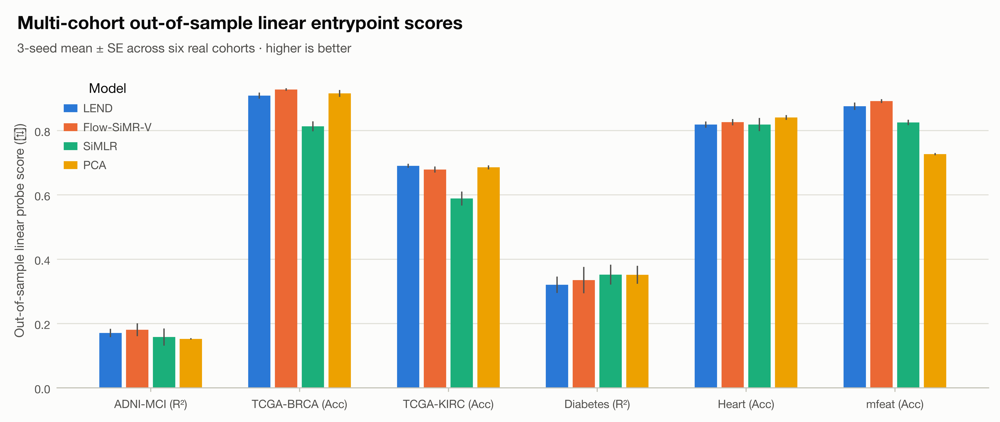
pysimlr.plot_benchmark). Out-of-sample linear entrypoint scores across the six real biomedical cohorts (ADNI-MCI, TCGA-BRCA, TCGA-KIRC, Diabetes, Heart, mfeat) comparing top SiMR architectures (LEND, Flow-SiMR-V, SiMLR) against dense PCA (3-seed means and error bars from deep_ranking_benchmark.csv).
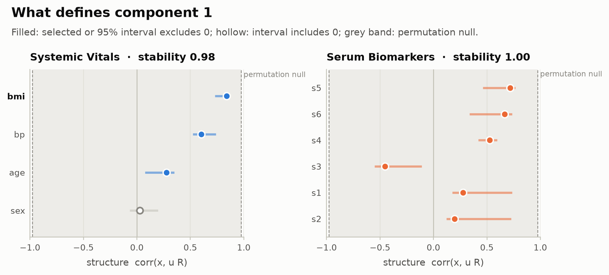
pysimlr.plot_top_features). Top features per view (Systemic Vitals and Serum Biomarkers) on Component 1 of LEND, plotting feature-to-score structure correlations \(r(\mathbf{x}_{mj}, (\mathbf{U}\mathbf{R})_1)\) with 95% subsample intervals (\(n_{\text{sub}} = 50\)), permutation null floor (\(n_{\text{perm}} = 20\)), and stability-selected features highlighted in bold (results_cache/nsa_v_loadings.json).
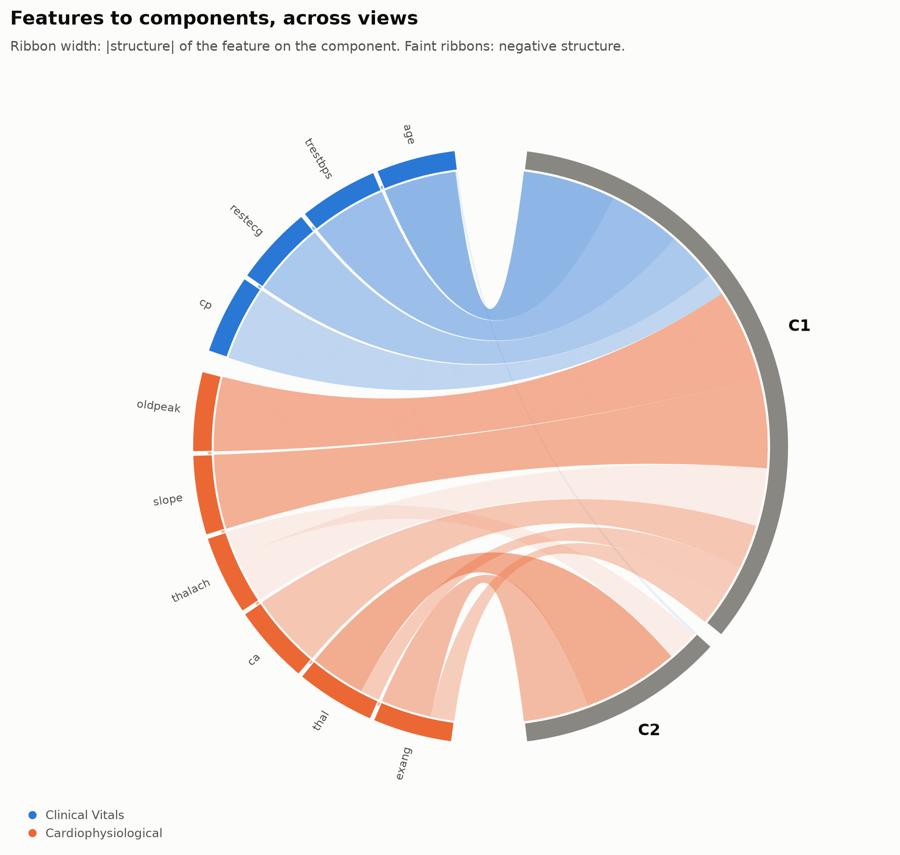
pysimlr.plot_feature_chord, Heart Cohort). Ribbons link clinical vitals (cp chest pain, sex, age, restecg) and cardiophysiological stress indicators (thal thallium defect, ca fluoroscopy vessels, exang exercise angina, oldpeak, thalach) to components C1 and C2, filtered by subsample stability selection (results_cache/nsa_v_loadings.json).
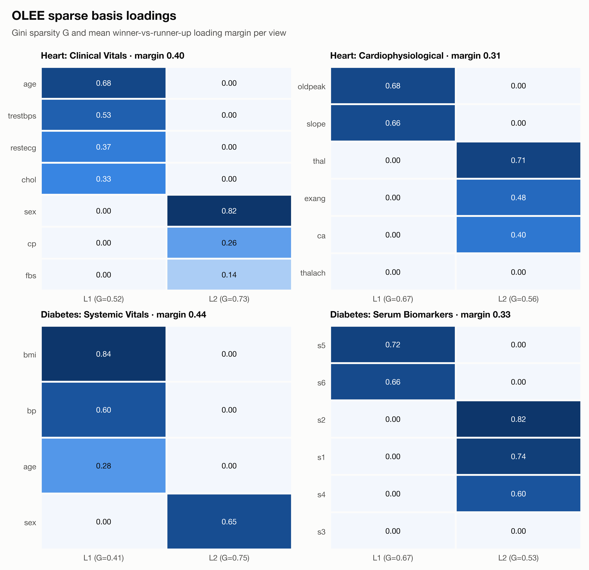
nsa_flow). LEND OLEE loadings \(\mathbf{L}_m\) of each Heart and Diabetes view (results_cache/nsa_v_loadings.json); G is the Gini coefficient of each component and average loading margins are reported.
In MultiOmics (TCGA-BRCA, \(N = 822\)), out-of-sample Estrogen Receptor classification accuracy on the linear entrypoint is 92.7% \(\pm\) 0.7% (Flow-SiMR-V), 90.9% \(\pm\) 1.7% (LEND) and 91.9% \(\pm\) 1.1% (NEDPP), against 91.5% \(\pm\) 1.8% for PCA (3-seed means \(\pm\) SD); the sparse non-negative dictionaries \(\mathbf{V}_m\), tri-modal feature chord, and view-level quality radar are examined in Appendix A. In TCGA-KIRC (\(N = 467\)), pathologic stage classification on the consensus embedding \(\mathbf{U}\) is 61.0% \(\pm\) 3.9% for LEND against 67.1% \(\pm\) 1.5% for PCA. On compact clinical cohorts, Diabetes reaches \(R^2 =\) 0.352 for SiMLR against 0.351 for PCA, and Heart reaches accuracy 0.848 for NSAFlow-PCA and 0.819 for SiMLR. Figure 3.13, Figure 3.14, and Figure 3.15 show the stability-selected structure correlations, multi-view feature-to-component chord, and OLEE loadings \(\mathbf{L}_m\) across Heart and Diabetes; while the linear entrypoint \(\mathbf{Z}_{m,\text{lin}} = \mathbf{X}_m \mathbf{V}_m\) maps individual observations into the latent consensus space, the OLEE loadings \(\mathbf{L}_m\) decompose individual patient profiles into exact additive risk attributions \(c_{m,i,j,l} = x_{m,i,j} l_{m,j,l}\) without post-hoc Monte Carlo approximations (Wachter et al. 2018; Karimi et al. 2021; Pearl 2009). Complete parameter sensitivity ablations—the \(w \in [0.01, 0.95]\) trade-off curve, basis diagnostics, stability rank selection across \(k\), and synthetic noise recovery—are in Appendix B.